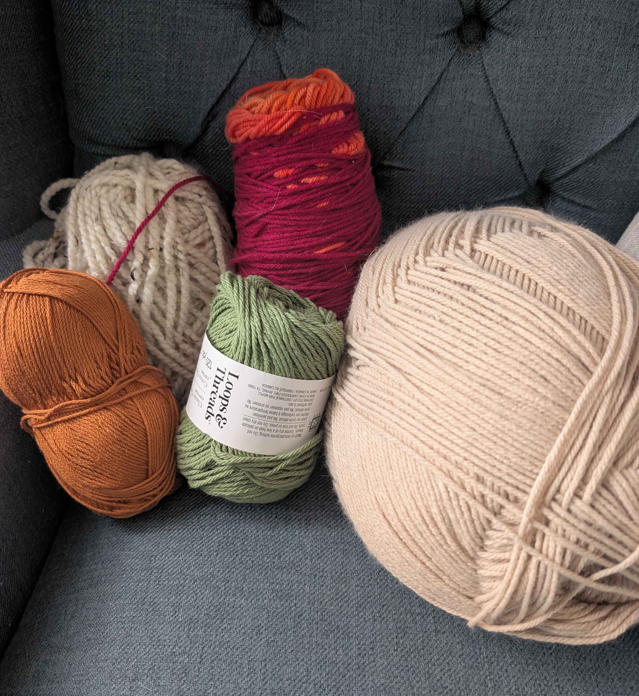

Introduction to Yarn Crafts and Associated Hobbies
An Introduction to Yarn Crafts as a Hobby
Getting Started
Textiles and yarn-based crafts have been an integral and evolving craft for millenia. While we may not need them as essential survival skills in the modern world they are still a beloved and cherished practice that exist
across cultures and continents. This website aims to explore yarn crafts and provide an introduction to several to start prospective enthusiasts on a journey of exploration with these crafts.
What are Yarn Crafts and What is Yarn?
What are Yarn Crafts?
It is important to know Yarn Crafts are a large and diverse field, if a topic you believe should be covered is not feel free to investigate on your own.
Yarn Crafts are a diverse family of textile arts that transform skeins of yarn into functional or decorative works.
The most popular and practiced of these crafts are Kntting and Crocheting but it is important to remember that there are a
great many of these crafts such as weaving, tufting, punch needle, and macramé.

A selection of various yarns.
What is Yarn?
Yarn is a continuous strand of interlocked fibers created through a process called spinning, where raw materials are twisted together to achieve the strength and length required for textiles.
Historically, the production of yarn dates back tens of thousands of years, beginning with prehistoric humans who hand-spun wild flax and animal hair using simple tools like the drop spindle.
This domestic craft was transformed during the 18th-century Industrial Revolution with the invention of the Spinning Jenny, which moved production from the home to the factory.
In the 20th century, the industry expanded further with the introduction of synthetic fibers like acrylic and nylon, offering durable and affordable alternatives to traditional materials like wool,
silk, and cotton.
Today, yarn is widely available through several different retail channels depending on your specific project needs.
Local Yarn Stores (LYS) or independent boutiques are ideal for finding high-quality, hand-dyed natural fibers and receiving expert advice, while major craft retailers offer a vast selection of budget-friendly commercial brands.
If you prefer to shop from home, online specialty sites provide extensive inventories and bulk discounts.
For a more unique experience, many enthusiasts also purchase directly from small-scale fiber farms or through platforms like Etsy, which often feature sustainable, heritage-breed wools and specialty blends.
Crafts of the Month Gallery
A gallery of potential craft of the month selections.
What Craft is Right For Me?
There is no definitive answer to what craft you should select, at the end of the day all are equally valid and the choice is a personal one.
That said, when considering a craft it can be important to consider several facets such as -
Cost - How much will getting started with this new craft cost you?
Supplies> - Do I know what I need? Do I already own any or all of the needed tools?
Difficulty - Not all crafts or projects require the same user skill.
Desire - No hobby works unless you want to do it, the most important factor is what you want!
Why practice yarn crafts?
Diving into yarn crafts is about more than just making a cozy scarf or a quirky amigurumi—it’s a genuine investment in your well-being.
Whether you’re knitting, crocheting, or tufting, the rhythmic, repetitive motions create a "flow state" that naturally lowers cortisol and quiets a busy mind.
Beyond the stress relief, there’s a unique sense of pride in turning a simple string of fiber into a tangible, functional piece of art.
It’s a hobby that sharpens your focus, encourages patience, and leaves you with something beautiful to show for your "me-time."